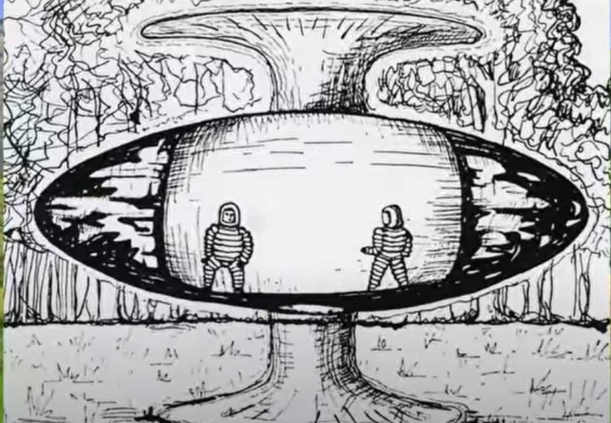
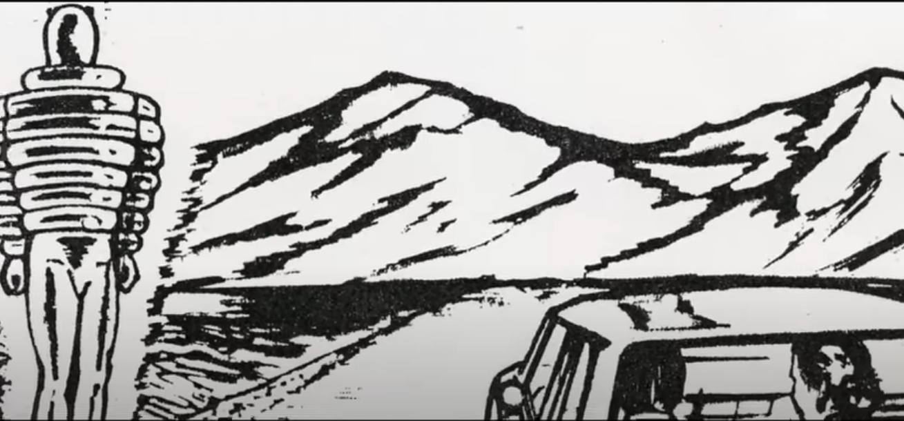

UFO がフラッシュ光を発するのではなく、フラッシュ光が UFO を生み出す
初出
1975-02-14, Reunion 島: フラッシュ光と共に消失した UFO/ET (2022-01-04) UFO
前置き
- この UFO と ET のスケッチは見覚えがある。過去記事で取り上げた筈。手抜き
- 数m 先に突如、UFO が出現 - UFO 内部が透けて見え、Michelin Man のような姿の 2体の ET がいた。  - UFO はフラッシュ光と共に消え去った - 現場は活火山地帯で、数多くの UFO/orb の目撃事例が報告されている。音声書写（自動生成）
展開
05:26 reunion island is located on the indian 05:29 ocean off the coast of madagascar on the 05:31 continent of africa it's a french 05:33 territory at the time of the reading of 05:35 this article the witness a 31 year old 05:38 married farmer by the name of en luz 05:40 fontaine was outside his house picking 05:43 grass for his rabbits suddenly an object 05:46 resembling a cabin materialized several 05:48 meters from him it was hovering over the 05:51 ground according to em loose the cabin 05:53 had a windscreen that resembled a 05:55 peugeot vehicle the shape of the object 05:57 itself was oblong with dark blue 05:59 extremities inside the cabin were two 06:02 beings one of whom was dressed 06:04 head-to-toe in a mitchell man garb the 06:06 other being was similarly dressed and 06:08 was facing away from the witness 06:11 both beings were wearing the helmets 06:12 described in previous encounters in a 06:15 flash like the previous report the 06:17 object and the beings disappeared not a 06:19 trace on the ground was found reunion 06:22 island appears to be replete with 06:24 sightings of this type of being the ufo 06:27 casebook another online portal reports 06:30 several other cases on this island not 06:33 far from an area called piton matadam on 06:36 february 14 1975 a 21 year old man heard 06:40 repeated bleeps for days finally he saw 06:43 a cup turned over a saucer three beings 06:46 issued from the object dressed like the 06:48 michelin logo 06:50 towards evening he again had a sighting 06:52 of the three white lights in the town of 06:54 santa maria this time with other 06:56 witnesses he reported that the vehicle 06:58 made a whistling sound as it flew away 07:01 again in february 1977 at guillot 07:05 airport a man who was a photographer was 07:08 developing film taken at the time and in 07:10 one of his photographs saw an object 07:12 above the plane he was photographing as 07:14 it ascended from the airport a sighting 07:17 with cooperation happened on september 07:20 7th 1978 in the town of san paul 07:24 a hundred people in the theater of 07:25 sanjile and its director saw a bright 07:28 light with a green center above the 07:30 theater moving towards the indian ocean 07:33 in the area of piton de funas an active 07:36 volcano on the island policemen and 07:38 locals saw lights going in and out of 07:40 the mouth of the volcano right after an 07:43 eruption gapan the french reporting 07:45 agency for ufos reports a young man 07:48 assad joseph was encountering an object 07:51 in the sky he did not however see any 07:53 occupants nor did he describe the object 07:56 to the agency 07:58 ufology literature contains abundant 08:00 accounts of beings such as small and 08:02 tall greys reptilian and insectoid 08:05 beings as well as asiatic and nordic 08:07 type sightings aliens like the michelin 08:10 man are rarer and seem to appear more 08:12 prevalent in reunion island 08:15 why and what is their motive 08:17 unlike other encounters this type of 08:19 being appears benign and in two cases 08:22 were reported as benevolent a common 08:24 thread among the accounts is the idea 08:26 that they seem to be observing common or
動画（13:31）
The Michelin Man Visitations… Benevolent E.Ts with No Agenda動画メモの DeepL
UFOロジーの文献には、小型や背の高いグレイ、爬虫類、昆虫型、アジアや北欧型の目撃談が豊富に載っている。 ミシュランマンのような宇宙人は稀である。このビデオでは、ミシュランマン型宇宙人に遭遇した人々の実際のケースを探ります。類似した ET の目撃事例
コメント1
- 注目箇所は… - 現場は活火山のある Reunion 島。活火山なので地殻圧力による圧電効果が想定できる。 - 目撃者の目前でフラッシュ光と共に（ET が中に見えている）UFO が消え去り、地上に痕跡は皆無だった。 in a 06:15 flash like the previous report the 06:17 object and the beings disappeared not a 06:19 trace on the ground was found
コメント2
- UFO がフラッシュ光を放って消え去った…のではなく、過去記事で述べた → 独特のパターンをもった強い電界（*2） ref: Missing-411 事件：警察犬が行方不明者被害者の匂いを追跡できないのはなぜか？ (2021-12-14) の副産物がフラッシュ光なのではないか。つまり、 ・強い電界がフラッシュ光を引き起こした or ・脳の神経インパルスの撹乱がフラッシュ光の感覚を引き起こした のではないか。 - さらに、この電界は付近にいる人間の脳の神経インパルスを撹乱させ、UFO/ET の疑似体験を生じさせたと。つまり、彼が見た UFO/ET はその脳の神経インパルスによる意識の撹乱によって後付で解釈・生成されたニセの体験（*1）なのではないか。
（*1）
- 下の過去記事で述べたギロチンの夢でも同様の後付けで解釈・生成されたニセの長い体験の現象が起きている。(2022-01-04)・この夢は、少なくとも数時間に及ぶ具体的な細部を備えており、その全てを克明に思い出せた（目覚めた直後だから当然）。 ・このような、少なくとも数時間分に相当する体験の夢が、ベッドの付属品の板が首に当たった一瞬の間に生成された筈だ…というのが Anthony Peake の主張。 ref: 【編】Anthony Peake：長い夢の体験が、一瞬で作られたことを証拠付ける事例 （途中：その3） (2020-10-31)フランス革命当時のフランスに居住していた。 → ある事件がきっかけで仲間から裏切りを疑われた。 → 人民裁判が開かれ、長い弁明をした。 → 判決がくだされ、死刑の宣告を受けた。 → ギロチン台に連行され、首を固定された。 → ギロチンの刃が落ちて首に当たった。 → ショックで目が覚めた。ベッドの付属品の板が首に当たったのだった。